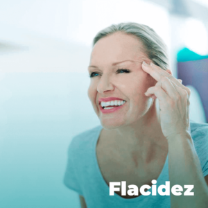

No emagrecimento, além das mudanças físicas nítidas como a perda
de peso e redução das medidas, as transformações mais
importantes acontecem de dentro para fora, através de uma
alimentação saudável e a adoção de novos hábitos.
O objetivo do Programa de Emagrecimento da
Magrass é proporcionar o emagrecimento saudável,
transformando sua relação com a comida e, desta forma,
restabelecer o bom funcionamento do organismo e a melhora da
imunidade, além de fornecer mais vitalidade, disposição e é
possível emagrecer com saúde desde a primeira semana, isso
porque o Programa Nutricional Magrass é exclusivo.
A gordura localizada é o acúmulo de gordura em determinadas
regiões de corpo. Eliminá-la, muitas vezes, parece um desfio,
porém com os tratamentos para gordura localizada da Magrass fica
mais fácil reduzir as medidas e acabar de vez com as
gordurinhas. Muitos fatores influenciam na distribuição de
gordura corporal, como sexo, hereditariedade, hormônios, entre
outros. Porém, o acúmulo de gordura está diretamente relacionado
a quantidade de calorias ingeridas x seu gasto calórico e estilo
de vida. Por esse motivo, manter hábitos alimentares saudáveis e
praticar exercícios físicos é tão importante para evitar essa
reserva de gordura. A regiões mais afetadas são: abdômen,
quadril, culotes, coxas e glúteos.
Os tratamentos Magrass com foco em redução de Gordura localizada
tratam as áreas corporais em que há maior concentração de
gordura. Todos contam com acompanhamento nutricional e
associação de procedimentos estéticos como: Anidro X Medicinal,
Terapia Combinada, Lipocavitação e Hidrolipo.
Os procedimentos são realizados com cosméticos específicos e
equipamentos de alta tecnologia que auxiliam na diminuição da
camada de gordura e consequentemente na melhora estética da
região. Os resultados estéticos podem ser sentidos desde a
primeira sessão, contribuindo para o aumento da autoestima e
autoconfiança de quem realiza o tratamento.
Os tratamentos para estrias na Magrass são efetivos porque
combinam o uso de cosméticos às mais modernas técnicas e
equipamentos da atualidade. Os resultados podem ser aparentes
desde as primeiras sessões. Estrias são lesões na pele em forma
de linhas que podem surgir por diferentes causas e em diferentes
fases da vida como na puberdade, na gravidez, no ganho muscular
e no excessivo ganho de peso.
Isso ocorre devido ao rompimento das fibras elásticas e
colágenas, formando cicatrizes sobre a pele. Podem apresentar
diferentes colorações, devido ao estágio de cicatrização em que
se encontram. Logo quando aparecem, apresentam coloração
avermelhada, sendo classificadas como estrias vermelhas. O
tratamento nesta fase é mais rápido e efetivo, pois ainda existe
a vascularização no local. Após esta etapa, se não tratadas, as
estrias adquirem uma coloração esbranquiçada, indicando uma
cicatrização completa da lesão e tornando a recuperação da pele
mais lenta.
Os tratamentos para estrias visam aumentar a microcirculação e
estimulam a recuperação de novas fibras de colágeno e elastina,
essenciais para a elasticidade e firmeza da pele. Além dos
procedimentos estéticos na clínica, a Magrass possui uma linha
de cosméticos Home Care, para serem usados em conjunto,
acelerando os resultados dos tratamentos.
A celulite é motivo de desconforto e dor para milhares de
mulheres, sendo muito comum o seu aparecimento na puberdade. A
boa notícia é que já existem diversos tratamentos para celulite
que podem auxiliar na diminuição e até desaparecimento desses
furinhos indesejados.
O temido aspecto de casca de laranja ocorre devido ao acúmulo de
gordura na região, acompanhada de má circulação e retenção de
líquidos. É mais comum nos quadris, coxas e glúteos, mas também
podem ocorrer em regiões pouco habituais como braços, joelhos e
até panturrilhas.
O grau da celulite varia conforme sua aparência, sendo o grau 1,
o mais leve, chegando ao grau 4, o mais profundo, capaz de
causar até dores nas regiões afetadas. Diferentes fatores podem
ocasionar seu surgimento, sendo os mais comuns relacionados a má
alimentação, beber pouca água, estresse e sedentarismo. O
aparecimento de celulites em homens geralmente está associado a
fatores hormonais, sendo indicado, além dos tratamentos
estéticos, o acompanhamento com um endocrinologista para
descobrir as causas.
Os tratamentos para celulite buscam a diminuição do inchaço e
inflamação, aumentam a circulação sanguínea e linfática, além de
reduzir quantidade de gordura local. Os procedimentos são
realizados associando cosméticos e equipamentos de alta
tecnologia e referência em qualidade, dentre eles: Anidro X
medicinal, Endermologia, terapia Combinada e Radiofrequência. A
duração do tratamento para celulite pode variar de acordo com
cada caso, podendo ser de 6 a 20 semanas. Associados a uma
alimentação saudável e a prática de atividades físicas, os
procedimentos estéticos contribuem para um melhor resultado.

Uma pele mais firme e resistente é possível com algumas mudanças
de hábitos e auxílio de procedimentos estéticos. Os tratamentos
para flacidez estimulam a recuperação da elasticidade nas
regiões afetadas, promovendo maior hidratação e sustentação da
pele.
Com o tempo, o corpo reduz a produção de colágeno e elastina,
proteínas responsáveis pela firmeza e elasticidade da pele, por
isso o surgimento da flacidez está associado ao processo de
envelhecimento. Porém, outros fatores podem contribuir para a
flacidez no corpo e no rosto, como a frequente exposição ao sol,
a má alimentação, o sedentarismo e o efeito sanfona.
Este problema atinge todas as áreas do corpo, sendo dividido
entre flacidez corporal e flacidez facial e para cada região
existe um tratamento recomendado. No corpo as regiões mais
afetadas são as da barriga, braços, pernas e seios. No rosto o
incomodo maior acontece na região do pescoço, olhos e boca.
Na Magrass, o tratamento anti flacidez conta com acompanhamento
nutricional e cosméticos associados aos procedimentos estéticos
de alta tecnologia, como a
Radiofrequência, Radiofrequência Criogênica, Anidro X
Medicinal
e Corrente Russa. Além dos cosméticos de alta tecnologia
utilizados na clínica, é possível dar continuidade ao tratamento
em casa com uma linha de cosméticos Home Care Magrass,
potencializando ainda mais os resultados.

PROGRAMA facial
 Fernanda K. Fava Vidal
Fernanda K. Fava Vidal
 Melissa Knuppe
Melissa Knuppe
 Cristiano Dalpiaz
Cristiano Dalpiaz
 Dilvane Hornung Bauer
Dilvane Hornung Bauer